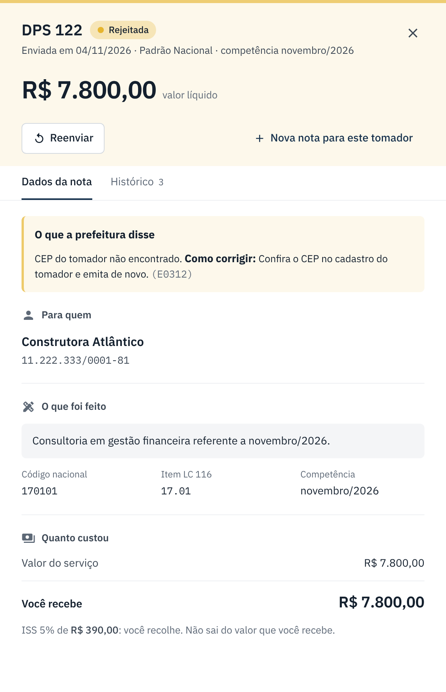

A prefeitura rejeitou a nota
A prefeitura (ou a SEFAZ) recusou a nota e disse o motivo. A nota rejeitada nunca valeu: não precisa cancelar.
search Como reconhecer
- A nota aparece como Rejeitada ou Com erro.
- O menu Minhas notas mostra um número vermelho, e a tela inicial mostra "Precisa da sua atenção".
storefront O que o cliente faz
- Abra a nota em Minhas notas (filtro Rejeição, linhas em amarelo). Leia a caixa O que a prefeitura disse e o Como corrigir.
- Se o erro está nos dados (CEP, CPF/CNPJ, código do serviço, valor): corrija o cadastro e clique em Nova nota para este tomador.
- Se o problema era de fora (prefeitura fora do ar, cadastro da empresa já corrigido pelo suporte): clique em Reenviar.
- Não entendeu? Mande um print do detalhe da nota para o suporte, com o código entre parênteses (ex.: E0312).

support_agent O que o suporte faz
- No painel, abra Notas (monitor), filtre por Status: Rejeitado e pela empresa. Clique na nota para ver a mensagem completa e a sugestão.
- Se o problema é do cadastro da empresa (inscrição municipal, regime, % do Simples), corrija na ficha da empresa, clique em Salvar alterações e peça ao cliente para Reenviar.
Rejeições mais comuns
| Mensagem | O que fazer |
|---|---|
| CEP do tomador não encontrado. | Corrija o CEP no cadastro do tomador e emita de novo. |
| Empresa ME/EPP do Simples sem o percentual aproximado de tributos (E0712). | Suporte: preencha "% tributos do Simples" na ficha da empresa (o contador informa). Depois o cliente reenvia. |
| E1235 citando finNFSe. | A Receita mudou o modelo da produção. Suporte: em Sistema › Ambiente de emissão, use o botão do modelo novo. Depois reenviar. |
| Emissão bloqueada / período vencido / limite mensal atingido. | Veja Emissão bloqueada ou limite atingido. |
| Tipo de nota não contratado para esta empresa. | Suporte: marque o tipo em "O que a empresa emite" na ficha, se foi contratado. |
← Voltar para a Central de Ajuda
Última revisão: 08/11/2026